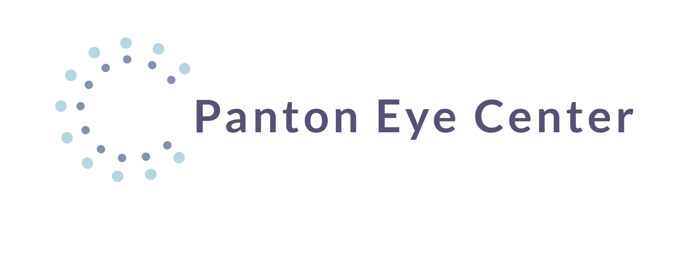
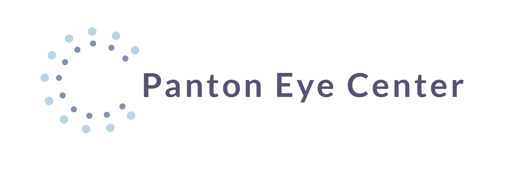

Quality Eye Care for your Entire Family
Built on a tradition of service and excellence, Panton Eye Center has been the premier choice for eye care in the Chicago area. We pride ourselves on providing friendly, individualized attention and the most technologically advanced vision correction options available today. From general eye exams and a full optical shop to more specialized care, including LASIK and laser cataract surgery, we offer a comprehensive array of services to meet all of your vision needs.
Visit our new Patient Portal to access your medical records online
You may use the Patient Portal to access results from your last examination and to communicate on administrative matters (e.g., billing). Please restrict medical communication to the phone by calling 708-452-7200 so that we can respond. We have an answering service to direct phone calls of an urgent nature. A patient portal is a website for your personal health care. The online tool helps you to keep track of your health care provider visits, test results, billing, prescriptions, and so on. You can also e-mail your provider questions through the portal. Many providers now offer patient portals. For access, you will need to set up an account. The service is free. A password is used so that all of your information is private and secure.